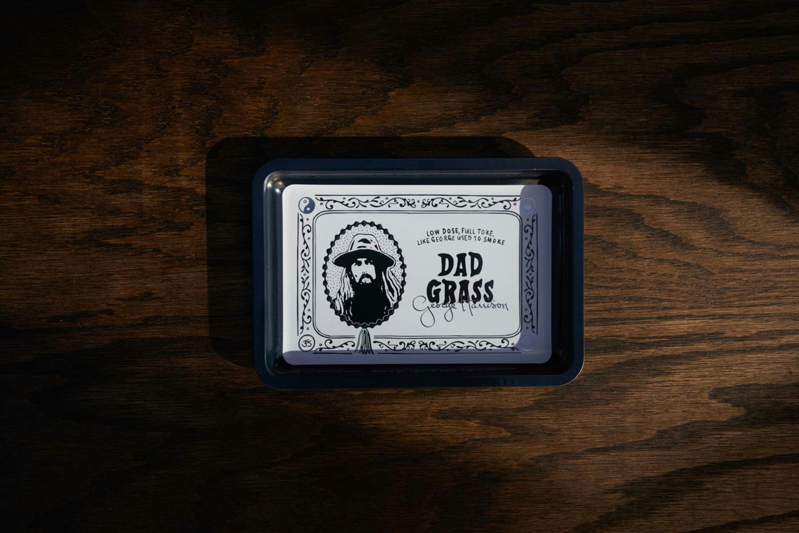

George Harrison'ın All Things Must Pass şarkısının 50. yılı anısına yapılmış ürün görseli
George Harrison, Liverpool'da doğdu ve genç yaşta gitar çalmaya başladı. 1958'de Paul McCartney tarafından John Lennon'a tanıtıldı ve kısa sürede The Quarrymen'e katıldı. Harrison, grubun baş gitaristi oldu ve müzikal yetenekleri ile dikkat çekti. Ancak Harrison, grubun ilk dönemlerinde daha geri planda kaldı ve Lennon-McCartney ikilisinin gölgesinde kaldı.
Harrison, grubun baş gitaristi olarak bilinir ve "While My Guitar Gently Weeps", "Here Comes the Sun", "Something" gibi unutulmaz şarkılara imza atmıştır. The Beatles'ın müziğinde Hint kültürü ve müziğinin yer bulmasında büyük rol oynamıştır. Harrison, Ravi Shankar'dan sitar çalmayı öğrenmiş ve bu enstrümanı Beatles'ın müziğine entegre etmiştir. "Norwegian Wood" şarkısı, batı pop müziğinde sitarın ilk kez kullanıldığı şarkılardan biri olarak bilinir. Harrison, The Beatles'ın son dönemlerinde söz yazarlığı ve müzikal katkılarıyla daha fazla ön plana çıkmaya başlamıştır.
The Beatles dağıldıktan sonra Harrison, solo kariyerinde büyük bir başarı elde etti. 1970 yılında yayımladığı üçlü albüm "All Things Must Pass", büyük bir ticari ve eleştirel başarı kazandı. Bu albümde yer alan "My Sweet Lord" şarkısı, Harrison'ın solo kariyerindeki en büyük hitlerden biri oldu. Harrison, aynı zamanda The Traveling Wilburys adlı süper grubun bir üyesiydi ve Bob Dylan, Roy Orbison, Tom Petty gibi müzisyenlerle çalıştı. 2001 yılında gırtlak kanseri nedeniyle hayatını kaybetti. Harrison, manevi arayışları, yardımseverliği ve barışçıl yaşam tarzıyla da tanınır.